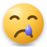
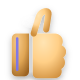

01
The simplest form
Basic geometry and minimal detail keep every glyph clear, even when it is small.
ITUNDAFACE
ItundaFace is an original emoji font made from expressive glyphs. A visual language for expressing feelings, actions and everyday moments without words.
다운로드 ↓






MADE AS A SYSTEM
Basic geometry and minimal detail keep every glyph clear, even when it is small.
Optical bounds are tuned so different meanings feel equally present in the same interface.
Direction, color, curves, proportions and depth follow shared rules across the library.
Semantic color stays meaningful while Itunda indigo appears as a restrained signature accent.
THE ITUNDAFACE SYSTEM
Every master starts from the same 80×80 coordinate system. Flat and 3D versions share the same silhouette, so a glyph can move from a tiny interface to a larger expressive moment without losing its identity.
COLOR FONT
Canonical SVG masters compile into an SVG-in-OpenType color font. The artwork stays in one source of truth while the system is prepared for web, mobile and product packages.
View the source ↗ITUNDAFACE
Original artwork. Shared rules. A growing expressive font for the people, places and products of Itunda.
Explore on GitHub ↗